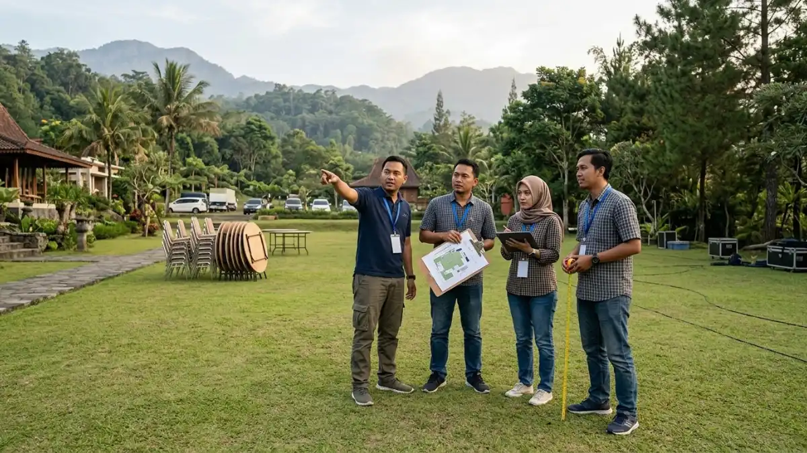

Tempat gala dinner outdoor di Batu yang tepat memiliki kapasitas sesuai, akses mudah, fasilitas lengkap, penerangan memadai, dan area cadangan saat hujan.
- Tempat gala dinner outdoor di Batu umumnya berupa villa, resort, agrowisata, taman wisata, dan area kebun.
- Kriteria utama meliputi kapasitas, akses, fasilitas, penerangan, dan perlindungan dari cuaca.
- Survei lokasi pada malam hari memberi gambaran suhu, cahaya, dan kebisingan yang sebenarnya.
- Kesalahan yang sering terjadi adalah memilih venue hanya karena foto menarik tanpa mengecek fasilitas dasar.
- Venue yang baik membantu penyedia paket bekerja efisien dan tamu merasa nyaman.
DAFTAR ISI
- 1. Tipe Tempat Apa Saja yang Tersedia untuk Gala Dinner Outdoor di Batu?
- 2. Apa Kriteria Tempat Gala Dinner Outdoor yang Baik?
- 3. Mengapa Survei Lokasi Malam Hari Itu Penting?
- 4. Daftar Pertanyaan Apa yang Perlu Diajukan kepada Pengelola Venue?
- 5. Apa Kesalahan Umum Saat Memilih Tempat Gala Dinner Outdoor?
- 6. Bagaimana Mencocokkan Tipe Venue dengan Jenis Acara?
- 7. Kesimpulan
1. Tipe Tempat Apa Saja yang Tersedia untuk Gala Dinner Outdoor di Batu?
Tipe tempat gala dinner outdoor di Batu mencakup villa dan resort bertaman, agrowisata, taman wisata, halaman hotel, serta area kebun atau lapangan terbuka yang dikelola pengelola wisata.
Kota Batu memiliki ragam lokasi yang mendukung acara malam hari. Setiap kategori memiliki karakteristik yang unik, sehingga masing-masing sesuai untuk keperluan yang berlainan.
- Villa dan resort bertaman. Lokasi ini biasanya menyediakan penginapan, taman, dan fasilitas dasar dalam satu kawasan. Cocok bagi rombongan yang menginap dan ingin acara privat.
- Agrowisata dan kebun. Menawarkan suasana alami dengan latar kebun atau lahan terbuka. Konsep rustic dan garden party sangat sesuai, namun akses dan fasilitas perlu dicek lebih teliti.
- Taman wisata dan area rekreasi. Memiliki area luas dan sudah terbiasa menerima kelompok besar. Perlu diperhatikan keberadaan pengunjung umum bila lokasi tidak ditutup khusus.
- Halaman hotel atau area terbuka hotel. Menggabungkan kenyamanan fasilitas hotel dengan suasana luar ruangan, cocok untuk acara formal.
- Lapangan atau lahan terbuka lain. Fleksibel untuk acara skala besar, tetapi biasanya membutuhkan perlengkapan tambahan seperti listrik, toilet, dan tenda.
Untuk memperoleh gambaran komprehensif mengenai isi layanan yang ditawarkan, silakan merujuk pada panduan paket gala dinner outdoor Batu.
2. Apa Kriteria Tempat Gala Dinner Outdoor yang Baik?
Kriteria tempat gala dinner outdoor yang baik adalah kapasitas sesuai jumlah tamu, akses jalan layak, fasilitas dasar lengkap, penerangan aman, listrik stabil, dan area perlindungan dari hujan.
Berikut kriteria yang sebaiknya dinilai satu per satu.
- Kapasitas dan luas area. Hitung ruang untuk meja, panggung, area katering, dan jalur tamu. Area terlalu sempit mengganggu pelayanan.
- Akses dan parkir. Pastikan jalan menuju lokasi dapat dilalui bus atau mobil rombongan, dan area parkir cukup luas.
- Fasilitas. Melaksanakan inspeksi komprehensif terhadap fasilitas toilet, ruang persiapan, area dapur katering, dan musala untuk memastikan standar kebersihan dan kualitas terpenuhi dengan baik.
- Penerangan. Jalur tamu, tangga, dan area parkir harus cukup terang.
- Listrik. Pastikan daya mencukupi untuk tata suara, lampu, dan perangkat katering, atau siapkan genset.
- Perlindungan cuaca. Cari area beratap, ruang pengganti, atau ruang bagi tenda cadangan.
- Kontur lahan. Permukaan yang rata lebih aman untuk meja, kursi, dan tamu bersepatu formal.
- Kebisingan dan lingkungan sekitar. Tanyakan aturan batas waktu musik dan potensi gangguan tetangga.
- Latar visual. Pemandangan, lanskap, dan area foto mendukung dokumentasi acara.
Venue yang memenuhi sebagian besar kriteria ini biasanya mempermudah kerja tim pelaksana dan menurunkan risiko di lapangan.

Survei lokasi sangat penting untuk memastikan area memiliki fasilitas dasar dan penerangan yang cukup di malam hari. (Ilustrasi)3. Mengapa Survei Lokasi Malam Hari Itu Penting?
Survei lokasi malam hari penting karena memperlihatkan suhu, pencahayaan, kebisingan, dan kondisi jalur tamu yang sebenarnya, yang sering berbeda dari tampilan lokasi pada siang hari.
Banyak panitia hanya mengunjungi venue pada siang hari ketika cuaca cerah dan pemandangan terlihat sempurna. Padahal gala dinner berlangsung malam, saat kondisi berubah.
Di dataran tinggi seperti Batu, suhu malam hari umumnya jauh lebih dingin, kabut dapat turun, dan area yang tampak terang di siang hari bisa gelap tanpa penerangan tambahan.
Saat survei malam hari, perhatikan hal-hal berikut:
- Tingkat kedinginan dan arah angin di area yang direncanakan.
- Kecukupan lampu pada jalur masuk, tangga, dan area parkir.
- Kebisingan dari jalan atau bangunan sekitar.
- Waktu tempuh dari akses utama pada jam yang sama dengan jadwal acara.
- Kondisi lantai, rumput, atau tanah bila basah.
Hasil survei ini membantu panitia menentukan kebutuhan penghangat, lampu tambahan, dan tata letak yang realistis. Informasi cuaca terkini dapat dipantau melalui BMKG menjelang hari acara.
4. Daftar Pertanyaan Apa yang Perlu Diajukan kepada Pengelola Venue?
Sejumlah pertanyaan fundamental yang harus disampaikan kepada pengelola fasilitas acara meliputi kapasitas maksimal ruangan, kebijakan terkait penyedia layanan pihak ketiga, pembatasan waktu penyelenggaraan kegiatan, sistem infrastruktur tenaga listrik, rencana penanggulangan kondisi cuaca ekstrem, serta ketentuan biaya-biaya tambahan yang mungkin dikenakan.
Mengajukan pertanyaan yang tepat sejak awal mencegah kesalahpahaman. Berikut contoh yang dapat dipakai.
- Berapa kapasitas maksimal untuk format makan malam duduk di area terbuka?
- Apakah venue mewajibkan katering internal atau memperbolehkan katering luar?
- Apakah terdapat pembatasan waktu penyelenggaraan acara dan pembatasan tingkat volume musik yang berlaku?
- Berapakah kapasitas daya listrik yang dapat diakses, dan apakah penggunaan generator set diizinkan dalam ketentuan yang berlaku?
- Apa rencana venue bila hujan turun, dan apakah ada ruang pengganti?
- Apakah tersedia ruang persiapan untuk pengisi acara dan tim katering?
- Bagaimana akses untuk bus, mobil rombongan, dan tamu berkebutuhan khusus?
- Apakah ada biaya tambahan untuk kebersihan, lembur, atau kerusakan?
- Kapan batas waktu perubahan jumlah peserta dan pembatalan?
- Apakah lokasi ditutup untuk umum selama acara?
Catat seluruh jawaban dan minta konfirmasi tertulis. Dokumen ini berguna sebagai dasar kontrak dan menghindari perbedaan pemahaman di kemudian hari.
5. Apa Kesalahan Umum Saat Memilih Tempat Gala Dinner Outdoor?
Kesalahan umum saat memilih tempat gala dinner outdoor meliputi menilai dari foto saja, tidak mengecek fasilitas dasar, mengabaikan rencana hujan, dan tidak memeriksa aturan vendor luar.
- Menilai hanya dari foto. Foto promosi diambil dari sudut terbaik dan waktu terbaik. Kondisi nyata dapat berbeda, terutama pada malam hari.
- Mengabaikan fasilitas dasar. Toilet yang terbatas atau listrik yang lemah dapat mengganggu acara berskala besar.
- Tidak menyiapkan rencana hujan. Venue tanpa area teduh membuat acara bergantung pada cuaca.
- Tidak mengecek aturan vendor luar. Beberapa venue mewajibkan katering atau perlengkapan tertentu, yang memengaruhi anggaran dan pilihan tema.
- Mengabaikan akses tamu. Akses yang melibatkan jalan menurun dengan kemiringan tajam atau tangga yang curam dapat menimbulkan kesulitan signifikan bagi pengunjung yang berusia lanjut maupun mereka yang memiliki kebutuhan aksesibilitas khusus.
- Memesan terlalu mepet. Lokasi pilihan utama mencapai kapasitas maksimal, sehingga panitia penyelenggara terpaksa menerima alternatif yang terbatas.
- Tidak mempertimbangkan penyedia paket. Venue yang kompatibel dengan penyedia paket pilihan memudahkan koordinasi. Pelajari komponen biaya dan penawaran di harga paket gala dinner outdoor Batu.
6. Bagaimana Mencocokkan Tipe Venue dengan Jenis Acara?
Mencocokkan venue dengan jenis acara dilakukan dengan menilai tujuan, jumlah tamu, tingkat formalitas, dan kebutuhan menginap, lalu memilih tipe lokasi yang paling mendukung.
- Acara eksekutif atau penghargaan perusahaan lebih cocok di halaman hotel atau resort yang menawarkan kesan formal dan fasilitas lengkap.
- Family gathering yang melibatkan anak-anak lebih nyaman di taman atau agrowisata dengan area luas dan aman.
- Acara dengan konsep rustic atau garden party sesuai untuk kebun dan lahan terbuka dengan suasana alami.
- Pertemuan besar yang melibatkan ratusan peserta membutuhkan lahan luas dengan akses kendaraan yang baik.
Pertimbangkan juga kebutuhan menginap. Rombongan dari luar kota akan lebih nyaman bila venue berada dalam kawasan yang sama dengan penginapan, sehingga waktu perjalanan malam hari dapat diminimalkan.
Bila rundown acara padat, lokasi yang menyatukan area rapat, makan malam, dan penginapan akan menghemat waktu dan biaya transportasi. Untuk menyusun alur acara yang sesuai tipe venue, baca rundown dan konsep gala dinner outdoor Batu.
7. Kesimpulan
Memilih tempat gala dinner outdoor di Batu berarti menyeimbangkan kapasitas, akses, fasilitas, penerangan, dan perlindungan cuaca dengan tujuan acara.
Lakukan survei malam hari, ajukan daftar pertanyaan tertulis kepada pengelola, dan hindari kesalahan umum seperti menilai hanya dari foto.
Setelah venue terpilih, selaraskan dengan penyedia paket dan rundown acara. Gambaran lengkap tersedia di paket gala dinner outdoor Batu.